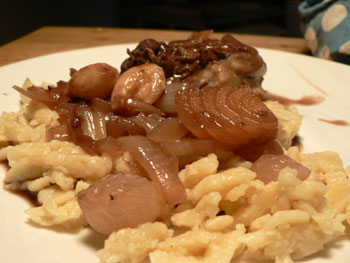

Spätzle
Sorry for the slow pace of posting these days, dear readers of Eat; my poor mother still has no kitchen. I promise we will be back in full swing by the end of the month.
This is about the time of year that I get tired of summer eating and want something heavy and slowly cooked. So tonight I braised chicken thighs in red wine and served them with homemade spätzle:

It was so good! I had never made these noodles before, but it sounded easy enough from the various recipes I found online. The batter (made of 2 cups flour, 1 teaspoon salt, a bit of ground nutmeg, 2 eggs, and 3/4 cup milk) did not pass easily through my colander, but the noodles came out looking very rustic and tasting just as I expected. I boiled them until they floated and looked fluffy, and then I sautéed them in the tiniest bit of butter (I promise, mom!). The downside is the dishes that result, which might as well be covered in cement.
I can’t wait for fall and winter cooking!
Comments
Leland, you are doing yeoman’s work keeping the blog going on your own this month – I’ll make it up to you when I get my kitchen up and running again, I promise!
The spaetzle look wonderful; I haven’t made them since Watergate days. Did you try putting all the dishes to soak in cold water? Hot water would just gelatinize the starch in the batter and make it stick worse. (Technically speaking!)
Ah…cold water! I feel like I have noticed that before with floury cleanup, but now I will remember it.
I’ve never made spaetzle but you make it sound easy and your meal looks delicious. I’m not at the point where I’m ready for this kind of eating but I’m looking forward to the first cold and rainy day of fall when a meal like this would be perfect.
Oh yum, Spaetzle. You’ll also have to try Kaesespaetzle, which involves adding copies amounts of grated cheese to the noodles. And yes, I couldn’t agree more- I can’t wait for cold weather cooking! Also, I love the pic of you in the chef’s hat. ;)
Er, copious.
I never had Sapetzle before moving to NYC and eating at a Hungarian place. Yum!
I’m so with you about gettng tired of summer food. I think I’m going to make a hearty dish this weekend…or hit Little Poland for their Hungarian Potato Pancakes, which is essentially beef stroganoff over potato pancakes.
Add a comment